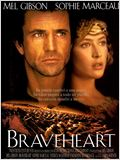

En el siglo XIV, los escoceses viven oprimidos por los gravosos tributos y las injustas leyes impuestas por los ingleses. William Wallace es un joven escocés que regresa a su tierra despues de muchos años de ausencia. Siendo un niño, toda su familia fue asesinada por los ingleses, razón por la cual se fue a vivir lejos con un tío suyo.
Jules y Vincent, dos asesinos a sueldo con no demasiadas luces, trabajan para el gángster Marsellus Wallace. Vincent le confiesa a Jules que Marsellus le ha pedido que cuide de Mia, su atractiva mujer. Jules le recomienda prudencia porque es muy peligroso sobrepasarse con la novia del jefe. Cuando llega la hora de trabajar, ambos deben ponerse "manos a la obra". Su misión: recuperar un misterioso maletín.